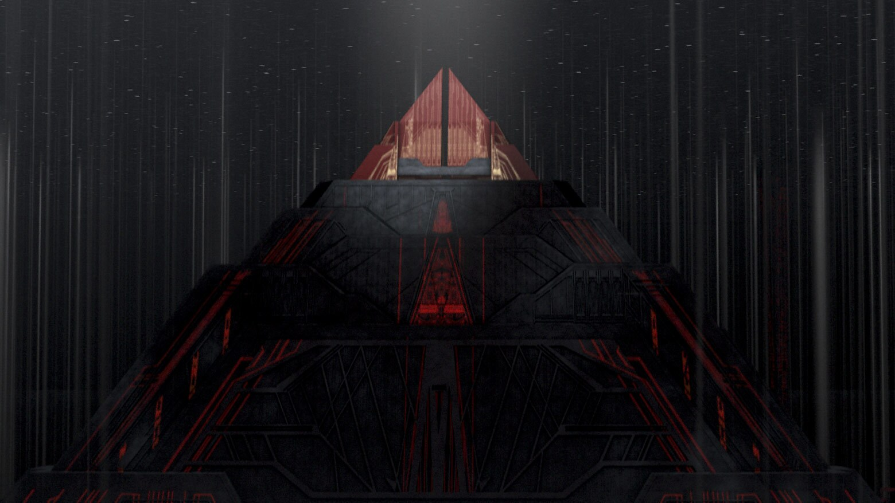
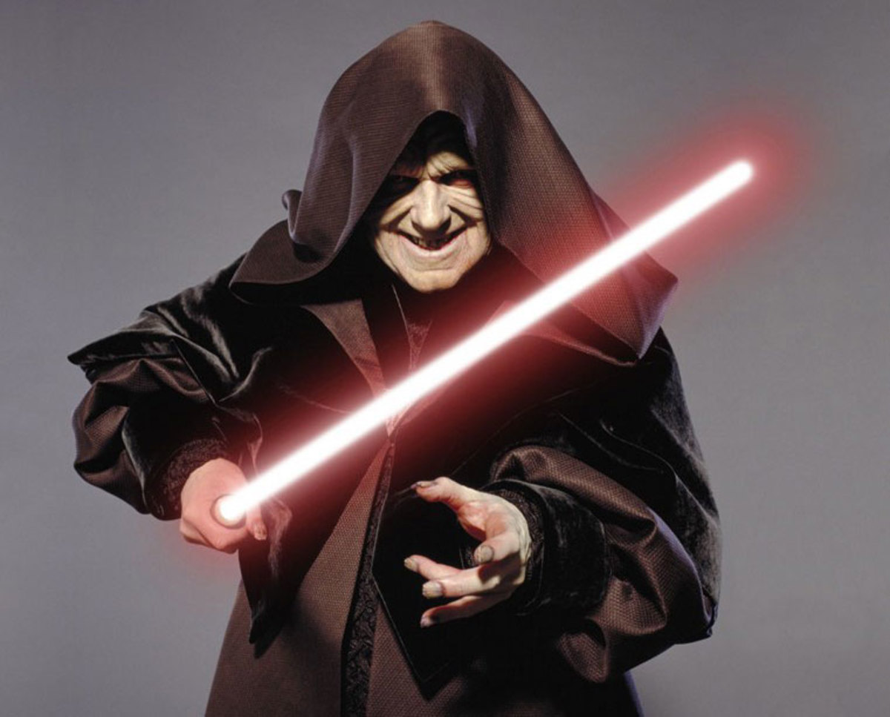
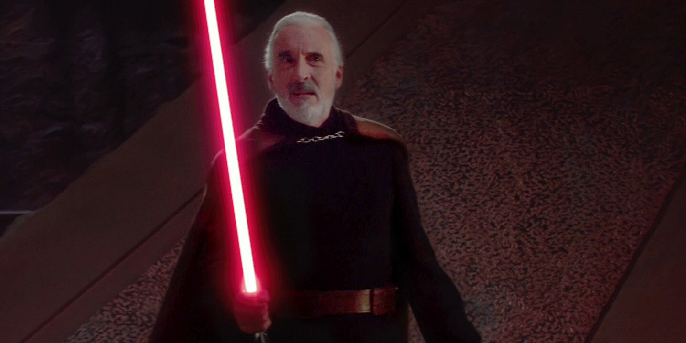

Republic Era Sith
"Always two there are, no more, no less." - Master Yoda. The Rule of Two, established by Darth Bane, requires there to be two Sith at any given time. A master, and an apprentice. Thus there aren't too many Sith to name during this period, in fact you could probably name nearly of them on one hand. The history of the Rule of Two is interesting, but that is another story for another day. Technically, there were only two Sith during this era, however, that does not mean there were not more than two dark side users of the Force during this time. In fact, there were quite a few, each apprentice of a Sith master is technically supposed to have one. Anyway, let us move on. Some of the Sith and/or dark side Force users that will be discussed are:
- Darth Sidious
- Darth Tyranus
- Darth Vader
- Darth Maul

Darth Sidious
By far, the most powerful and successful Sith to ever live. Having taken control of the entire galaxy, and nearly systematically wiping out the Jedi. Darth Sidious is by far one of the most power Siths to ever live. Additionally, Darth Sidious was able to fight off four Jedi Council Members during their attack as well as fight off Master Yoda. Sidious also successfully turned the most powerful Jedi ever, Anakin Skywalker, over to the dark side, and made him his apprentice. His reign ended when Luke Skywalker was able to turn Darth Vader, Anakin Skywalker, back to the light side, which resulted in his death down the reactor shaft of the second Death Star. For additional information about Darth Sidious you may find it here: Darth Sidious

Darth Tyranus
Darth Tyranus, also known as Count Dooku. Darth Tyranus served Darth Sidious after the death of Darth Sidious' former apprentice, Darth Maul. Dooku was originally a Jedi Knight, and he also had an apprentice, Jedi Qui Gon Jinn. Some time after Dooku fell to the dark side, he himself took on a Sith apprentice, although, he never said that in front of his master. Dooku was also the leader of the Confederation of Independent Systems, or CIS. He led Confederation until his death, when he was beheaded by Anakin Skywalker during the kidnapping of Chancellor Palpatine. For additional information about Darth Tyranus you may find it here: Darth Tyranus
